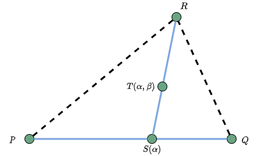
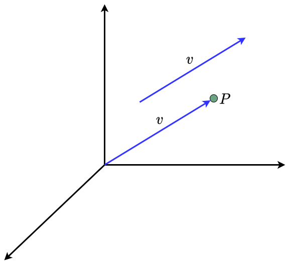
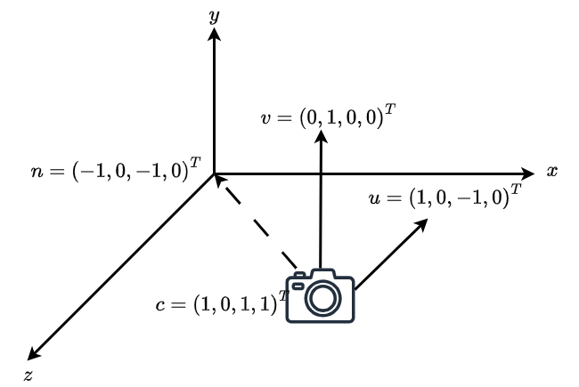

计算机图形学
第三章(1) 变换
我们如何赋予数字角色生命与活力？
从角色的奔跑、跳跃，到镜头的推拉、摇移……
这一切复杂运动的背后，都是采用“变换”的基本原理实现，可以精确地描述、控制并组合这些运动
三部曲：精通变换
第一部分：变换的数学基础
掌握描述空间和运动的数学工具：向量、矩阵、坐标系等
第二部分：基础变换
利用数学工具，准确描述三种基础变换：平移、旋转和缩放
第三部分：复合变换
将基础变换进行组合，在二维平面/三维空间中，实现复杂的复合变换
第一部分：变换的数学基础
本部分内容：
- 几何基础
- 坐标系
- 向量、矩阵
模型如何表示？
这是一个在3D软件中创建的静态模型。
该如何用精确的、计算机能理解的语言，来描述和控制它的所有运动？
课堂目标：构建变换的数学基础
课程结束时，你将能够：
- 描述 模型在图形学中的表示形式
- 解释 向量与矩阵在图形学中的几何意义
- 区分 几种核心的坐标系
- 阐述 引入齐次坐标的必要性
一个问题：统一运算
一个点 P(x, y)，我们希望对它进行两种操作：
- 平移： P = P + T (加法)
- 旋转/缩放： P' = M * P (乘法)
问题： 我们有没有可能找到一种统一的数学形式，让“平移”和“旋转”都能用同一种运算（例如“矩阵乘法”）来表示？如果将点换成一个形体呢？
三维形体的基本构成
在计算机的世界里，如何被描述和存储一个复杂的三维图形？
它由三个最基本的图元构成：
- 点 (Points)，称之为顶点 (Vertices)：定义了形状在空间中的各个位置。
- 线 (Lines)，称之为边 (Edges)：连接两个顶点，构成了形状的骨架。
- 面 (Faces)，称之为多边形(Polygons)：由三条或更多边闭合构成，形成了物体的表面。
核心思想：所有复杂的三维曲面，都是由无数个微小的、简单的平面多边形拼接而成的。
三角面片 (Triangle Patch)
在所有多边形中，三角形是最为重要的一种多边形
![[stanford bunny]](../../images/cg/cha../../chap03/ch03-stanford-bunnies.png)
三角面片，是用于表示所有三维表面的最小单元
三角面片 (Triangle Patch)
- 该模型由2503个顶点，4965个三角形拼接而成。
- 这些顶点的坐标位置，决定了三角形在空间中的位置和形状。
为什么是三角形？
将所有多边形都分解为三角形有三大优势：
- 保证平面性： 空间中的任意三点，永远处于同一个平面上。这极大地简化了后续的渲染计算。
- 结构最简单： 三角形是构成多边形的最简形式，便于进行统一和标准化的处理。
- 硬件原生支持： 现代GPU的硬件流水线被高度优化，能够以惊人的速度并行处理海量的三角形。
因此，这种由顶点和三角形构成的结构，就是计算机图形学中表示三维模型最基本、最重要的方式——三角形网格 (Triangle Mesh)。我们后续所有的变换，都是对这些顶点进行的数学运算。
描述世界的“基本元素”
为了在计算机中构建三维世界，我们需要一套最基本的“图元”来描述所有物体。
这些图元由三种最基本的几何元素构成：
- 标量 (Scalars): 只有大小，没有几何属性的数值 (例如：长度、时间)
- 向量 (Vectors): 具有大小和方向的量 (例如：速度、力、位移)
- 点 (Points): 描述空间中的一个位置
“点”的表示
点，表示空间中的位置
- 点与点相减，可得到一个向量，即$v=P-Q$
- 点与向量相加，可得到另一个点，即$P=v+Q$
“点”的表示
- 仿射空间
- 由点和向量构成的空间，在空间中能够执行的操作包括:
- 向量相加，如$w=u+v$
- 标题和向量相乘，如$u'=t\times u$
- 点和向量相加，例如$Q=P+v$
- 标量和标量间运算，如$t'=t_1-t_2$
- 注意，点和点之间不能直接相加
且对任意点定义有 - 仿射和
- 其形式为$P=\alpha_1P_1+\alpha_2P_2+\cdots+\alpha_nP_n$，其中$\alpha_1+\alpha_2+\cdots+\alpha_n=1$，称为$P$在点$P_1,P_2,\ldots,P_n$上的仿射和
“线”的表示
对所有的点形如:
$P(\alpha)=P_0+\alpha d$
有，这些点都位于通过点$P_0$且沿着方向$d$的射线上
这称为参数方程。通过改变标量 $\alpha$ 的值，我们可以得到直线上所有的点
“线”的表示
直线参数方程形式
$P(\alpha)=\alpha P_0+(1-\alpha)P_1$
- 若$\alpha\geq 0$，则$P(\alpha)$为沿着$d$方向远离$P_0$的射线
- 若用两个点$R$和$Q$定义$v$，则有$P(\alpha)=Q+\alpha(R-Q)=Q+\alpha v=\alpha R+(1-\alpha)Q$。此时，对于$0\leq\alpha\leq 1$，定义的为所有位于线段$RQ$上的点
“面”的表示
平面有两种定义方式：
一个点和两个向量
三个点
“面”的表示
三角形
图中，$S(\alpha)$为$P$和$Q$的仿射和，$T(\alpha,\beta)$为$S(\alpha)$和$R$的仿射和，若$0\leq\alpha,\beta\leq 1$，则所有的点都定义在三角形$PQR$内部
“面”的表示
凸形
一个形体是凸的，当且仅当形体内连接任意两个点的线段都在形体内部时成立
凸多边形
非凸多边形
“面”的表示
凸包
如果对所有的点，其仿射和的系数，都满足$\alpha_i\geq 0$，则称这些点构成点集$P_1,P_2,\ldots,P_n$上的凸包(Convex Hull)
点集$P_1,P_2,\ldots,P_n$上的凸包，定义为能够包围点集中所有点的最小的凸形
“面”的表示
重心坐标在纹理映射和顶点属性插值等高级技术中极为重要
“面”的表示
法线
对由一点和两向量构成的平面 \[P(\alpha,\beta)=P+\alpha u+\beta v\]
可利用叉积(cross product)计算对应的法向量 \[n=u\times v\]
对应于 \[(P(\alpha,\beta)-P)\cdot n=0\]
物体在“哪里”？
一个根本问题
我们如何在计算机中，精确地描述一个物体的位置？
“这个茶壶在这里”
![[犹他茶壶的图片]](../../images/cg/cha../../chap03/ch03-utah-teapot-2008.png)
... 这句话对于计算机来说毫无意义
需要一个严谨的数学框架来定义“这里”是哪里
什么是“线性无关”？
一组向量 $(\vec{v_1}, \vec{v_2}, \dots, \vec{v_n})$ 是线性无关的，如果其中任何一个向量都不能被其他向量的线性组合（即缩放和相加）所表示。即有：
\[\alpha_1v_1+\alpha_2v_2+\cdots+\alpha_nv_n=0 \iff \alpha_1=\alpha_2=\cdots=\alpha_n=0\]
通俗地说：
- 在二维空间中，两个向量只要不在同一条直线上，它们就是线性无关的
- 在三维空间中，三个向量只要不在同一个平面上，它们就是线性无关的
线性无关的向量构成了描述一个空间的“最小集合”，它们是构建一个有效坐标系的基石
点击这里查看线性无关的交互式演示维度与基
精确定义一个空间的“大小”
-
维度 (Dimension): 一个向量空间 $V$ 的维度，是该空间中线性无关向量的最大数目
- 例如，在二维平面上，最多只能找到2个线性无关的向量。任何第3个向量都可以被前两个表示出来。因此，二维平面的维度是2
- 同理，三维空间的维度是3
- 基 (Basis): 如果一个向量空间 $V$ 的维度是 $n$，那么任何一组由 $n$ 个线性无关的向量 $\{\vec{v_1}, \vec{v_2}, \dots, \vec{v_n}\}$ 构成的集合，都称为该空间的一个基。
- 空间中任意向量$v$均可写成 \[v=\alpha_1\vec{v_1}+\alpha_2\vec{v_2}+\cdots+\alpha_n\vec{v_n}\] 其中$\{\alpha_i\}$各不相同
坐标系 (Coordinate System)
一个$n$维坐标系，由$n$个线性无关的基向量$(\vec{v_1}, \vec{v_2}, \dots, \vec{v_n})$ 构成
定义了空间中的“方向”和“尺度”。
作用： 空间中的任何向量 $\vec{v}$ 都可以表示为这些基向量的线性组合：
$\vec{v} = \alpha_1 \vec{v_1} + \alpha_2 \vec{v_2} + \dots + \alpha_n \vec{v_n}$
坐标系本身没有“起点”，因此它只能描述向量（方向），无法描述一个绝对的点（位置）
坐标系 (Coordinate System)
对于向量$\vec{v}$，有
$\vec{v} = \alpha_1 \vec{v_1} + \alpha_2 \vec{v_2} + \dots + \alpha_n \vec{v_n}$
称常量$\{\alpha_1,\alpha_2,\cdots,\alpha_n\}$为向量$v$相对于基的表示，可写为 \[\mathbf{a}=[\alpha_1 \alpha_2 \cdots \alpha_n]^{T}=\begin{bmatrix}\alpha_1\\\alpha_2\\\cdots\\\alpha_n\end{bmatrix}\]
例如：$v=2v_1+3v_2-4v_3$，有$\mathbf{a}=[2\ 3\ -4]^{T}$
坐标系 (Coordinate System)
下列两个坐标系表示，哪个是正确的
两个都对，因为向量没有固定位置
标架 (Frame)
坐标系只能描述向量，无法描述点
为了确定点的位置，必须在坐标系的基础上，再指定一个原点 (Origin) $P_0$，构成标架 (Frame)
标架 = 原点 + 基向量 $\implies (P_0, \vec{v_1}, \vec{v_2}, \dots, \vec{v_n})$
一个“标架”才构成了一个完整的参考系。
作用： 在一个标架中，空间中的任何一个点 $P$ 都可以被唯一地表示：
\[P = P_0 + \beta_1 \vec{v_1} + \beta_2 \vec{v_2} + \dots + \beta_n \vec{v_n}\]
空间中的任意一个向量$\vec{v}$可写成：
\[\vec{v}=\alpha_1\vec{v_1}+\alpha_2\vec{v_2}+\cdots+\alpha_n\vec{v_n}\]
区分点和向量
从前面的描述中，可以看到，点和向量的表示类似，有 \[\mathbf{P}=[\beta_1\ \beta_2\ \beta_3]\] \[\mathbf{\vec{v}}=[\alpha_1\ \alpha_2\ \alpha_3]\] 但是，点有位置，向量没有位置
表示 (Representation)
给定一个标架 $(P_0, \vec{v_1}, \dots, \vec{v_n})$，一个点 $P$ 的坐标 $(\beta_1, \dots, \beta_n)$ 就是它在该标架下的**表示**。
核心思想： 一个物体在空间中的位置是绝对的，但它在不同标架下的坐标表示是相对的
同一个点，在不同的标架（参考系）下，会有完全不同的坐标表示
坐标系--标架--表示
点和向量？
我们已经知道，在一个标架 $(P_0, \vec{v_1}, \vec{v_2}, \vec{v_3})$ 中：
一个向量 $\vec{v}$ 的表示为：$\vec{v} = \alpha_1 \vec{v_1} + \alpha_2 \vec{v_2} + \alpha_3 \vec{v_3}$
一个点$P$的表示为：$P = P_0 + \beta_1 \vec{v_1} + \beta_2 \vec{v_2} + \beta_3 \vec{v_3}$
问题： 点和向量的坐标表示 $[\alpha_1, \alpha_2, \alpha_3]^T$ 和 $[\beta_1, \beta_2, \beta_3]^T$ 都是三维列向量，形式上完全一样。如何仅从数学表示上能将这二者区分开？
解决方案：升维
为坐标增加一个额外的维度$w$来解决这个问题
对于三维空间，我们将其坐标扩展到四维：
- 向量 $\vec{v} = [\alpha_1, \alpha_2, \alpha_3]$ → 齐次坐标表示为 $[\alpha_1, \alpha_2, \alpha_3, \bf{0}]^{T}$
- 点 $P = [\beta_1, \beta_2, \beta_3]$ → 齐次坐标表示为 $[\beta_1, \beta_2, \beta_3, \bf{1}]^{T}$
新增的$w$分量，类似一个类型标记，$w=0$代表向量，$w=1$代表点。
齐次坐标和计算机图形学
齐次坐标，是计算机图形学中极为重要的基本概念，广泛应用于各种图形算法中：
- 硬件流水线管理的实现采用4维矩阵和向量处理
- 通过矩阵运算，统一处理点和向量的变换，包括平移、旋转、缩放等，采用$4\times 4$的矩阵相乘实现
- 简化投影变换的计算
- 实现透视除法，处理深度信息
- 支持齐次坐标插值，提升渲染质量
- 便于处理无穷远点，实现平行投影
齐次坐标的定义
在标架 $(P_0, \vec{v_1}, \vec{v_2}, \vec{v_3})$ 中，我们可以将点和向量的表示统一成一个矩阵形式：
$\vec{v} = [\vec{v_1}\ \vec{v_2}\ \vec{v_3}\ P_0] \begin{bmatrix} \alpha_1 \\ \alpha_2 \\ \alpha_3 \\ 0 \end{bmatrix}$
$P = [\vec{v_1}\ \vec{v_2}\ \vec{v_3}\ P_0] \begin{bmatrix} \beta_1 \\ \beta_2 \\ \beta_3 \\ 1 \end{bmatrix}$
称这4维的列向量为点或向量的齐次坐标表示
齐次坐标的核心优势
核心优势： 它使得所有标准的几何变换（平移、旋转、缩放），都可以用统一的 $4 \times 4$ 矩阵乘法来实现，为计算机图形学带来了革命性的突破
这对于设计和实现GPU的硬件渲染流水线至关重要
应用：改变标架
想象一下，我们有两个标架：世界标架 $F_W$ 和相机标架 $F_C$
一个点在世界标架下的表示为 $P_W$，在相机标架下的表示为 $P_C$
我们可以通过一个 $4 \times 4$ 的变换矩阵 $M$，在两种表示之间进行转换：
$P_C = M \cdot P_W$
这个矩阵 $M$ 就是我们常说的模型-视图矩阵 (Model-View Matrix)
应用：改变标架
先改变“坐标系”
考虑同一个向量，在两组不同的基下有两组不同的表示，分别为
\[\mathbf{a}=[\alpha_1\ \alpha_2\ \alpha_3]\] \[\mathbf{b}=[\beta_1\ \beta_2\ \beta_3]\]
有
\[\begin{aligned} \vec{v}=\alpha_1\vec{v_1}+\alpha_2\vec{v_2}+\alpha_3\vec{v_3}=[\alpha_1\ \alpha_2\ \alpha_3][\vec{v_1}\ \vec{v_2}\ \vec{v_3}]^{T}\\ =\beta_1\vec{u_1}+\beta_2\vec{u_2}+\beta_3\vec{u_3}=[\beta_1\ \beta_2\ \beta_3][\vec{u_1}\ \vec{u_2}\ \vec{u_3}]^{T}\end{aligned}\]
应用：改变标架
第二组基$(\vec{u_1},\vec{u_2},\vec{u_3})$若用第一组基$(\vec{v_1},\vec{v_2},\vec{v_3})$表示，有
\[\begin{aligned} \vec{u_1}=\gamma_{11}\vec{v_1}+\gamma_{12}\vec{v_2}+\gamma_{13}\vec{v_3}\\ \vec{u_2}=\gamma_{21}\vec{v_1}+\gamma_{22}\vec{v_2}+\gamma_{23}\vec{v_3}\\ \vec{u_3}=\gamma_{31}\vec{v_1}+\gamma_{32}\vec{v_2}+\gamma_{33}\vec{v_3} \end{aligned}\]
应用：改变标架
这些参数写成$3\times 3$的矩阵形式有
\[M=\begin{bmatrix} \gamma_{11}\ \gamma_{12}\ \gamma_{13}\\ \gamma_{21}\ \gamma_{22}\ \gamma_{23}\\ \gamma_{31}\ \gamma_{32}\ \gamma_{33} \end{bmatrix}\]
可进一步写成
\[\mathbf{u}=\mathbf{M}\mathbf{v}\]
其中$\mathbf{u}=[\vec{u_1}\ \vec{u_2}\ \vec{u_3}]^{T}$，$\mathbf{v}=[\vec{v_1}\ \vec{v_2}\ \vec{v_3}]^{T}$
应用：改变标架
假设有向量$\vec{w}$在基$(\vec{v_1},\vec{v_2},\vec{v_3})$下有表示$[\alpha_1, \alpha_2, \alpha_3]$，即
\[\vec{w}=\alpha_1\vec{v_1}+\alpha_2\vec{v_2}+\alpha_3\vec{v_3}=\mathbf{a}^{T}\mathbf{v}\]
在基$(\vec{u_1},\vec{u_2},\vec{u_3})$下，有表示$[\beta_1, \beta_2, \beta_3]$，即
\[\vec{w}=\beta_1\vec{u_1}+\beta_2\vec{u_2}+\beta_3\vec{u_3}=\mathbf{b}^{T}\mathbf{u}\]
有
\[\mathbf{a}^{T}\mathbf{v}=\mathbf{b}^{T}\mathbf{u}=\mathbf{b}^{T}\mathbf{M}\mathbf{v}\]
因此，有
\[\mathbf{a}=\mathbf{M}^{T}\mathbf{b}\]
再令$\mathbf{T}=(\mathbf{M}^{T})^{-1}$
有
\[\mathbf{b}=\mathbf{T}\mathbf{a}\]
应用：改变标架
有\[a=\begin{bmatrix}1\\ 2\\ 3\end{bmatrix}\]
其对应的基为$(\vec{v_1},\vec{v_2},\vec{v_3})$，即有
\[\vec{w}=\vec{v_1}+2\vec{v_2}+3\vec{v_3}\]
有另一组其$(\vec{u_1},\vec{u_2},\vec{u_3})$，其中
\[\begin{aligned}\vec{u_1}=\vec{v_1}\\ \vec{u_2}=\vec{v_1}+\vec{v_2}\\ \vec{u_3}=\vec{v_1}+\vec{v_2}+\vec{v_3}\end{aligned}\]
应用：改变标架
矩阵$\mathbf{M}$为
\[\mathbf{M}=\begin{bmatrix}1&0&0\\1&1&0\\1&1&1\end{bmatrix}\]
有
\[\mathbf{T}=(\mathbf{M}^{T})^{-1}=\begin{bmatrix}1&-1&0\\0&1&-1\\0&0&1\end{bmatrix}\]
有
\[\mathbf{b}=\mathbf{T}\mathbf{a}=\begin{bmatrix}1&-1&0\\0&1&-1\\0&0&1\end{bmatrix}\begin{bmatrix}1\\ 2\\ 3\end{bmatrix}=\begin{bmatrix}-1\\ -1\\ 3\end{bmatrix}\]
即有
\[\vec{w}=-\vec{u_1}-\vec{u_2}+3\vec{u_3}\]
应用：改变标架
再看标架
有两个标架，分别为$(\vec{v_1}, \vec{v_2}, \vec{v_3}, P_0)$和$(\vec{u_1}, \vec{u_2}, \vec{u_3}, Q_0)$
两个标架间的关系为
\[\begin{aligned} u_1=\gamma_{11}v_1+\gamma_{12}v_2+\gamma_{13}v_3\\ u_2=\gamma_{21}v_1+\gamma_{22}v_2+\gamma_{23}v_3\\ u_3=\gamma_{31}v_1+\gamma_{32}v_2+\gamma_{33}v_3\\ Q_0=\gamma_{41}v_1+\gamma_{42}v_2+\gamma_{43}v_3+\gamma_{44}P_0 \end{aligned}\]
可写为
\[\begin{bmatrix}\vec{u_1}\\ \vec{u_2}\\ \vec{u_3}\\ Q_0 \end{bmatrix} = M \begin{bmatrix}\vec{v_1}\\ \vec{v_2}\\ \vec{v_3}\\ P_0\end{bmatrix}\]
应用：改变标架
对应的$4\times 4$矩阵为
\[\mathbf{M}=\begin{bmatrix} \gamma_{11}&\gamma_{12}&\gamma_{13}&0\\ \gamma_{21}&\gamma_{22}&\gamma_{23}&0\\ \gamma_{31}&\gamma_{32}&\gamma_{33}&0\\ \gamma_{41} &\gamma_{42}&\gamma_{43}&1 \end{bmatrix}\]
应用：改变标架
利用$M$计算两个标架之间的变换，同样考虑向量$w$在两个标架下的不同表示
在标架$(\vec{v_1},\vec{v_2},\vec{v_3},P_0)$下有表示$[\alpha_1, \alpha_2, \alpha_3, 0]$，即
\[\vec{w}=\alpha_1\vec{v_1}+\alpha_2\vec{v_2}+\alpha_3\vec{v_3}=\mathbf{a}^{T}\mathbf{v}\]
在标架$(\vec{u_1},\vec{u_2},\vec{u_3},Q_0)$下，有表示$[\beta_1, \beta_2, \beta_3, 0]$，即
\[\vec{w}=\beta_1\vec{u_1}+\beta_2\vec{u_2}+\beta_3\vec{u_3}=\mathbf{b}^{T}\mathbf{u}\]
同样可得到
\[\mathbf{a}=\mathbf{M}^{T}\mathbf{b}\]
其中
\[\mathbf{M}^{T}= \begin{bmatrix} \gamma_{11}&\gamma_{12}&\gamma_{13}&\gamma_{14}\\ \gamma_{21}&\gamma_{22}&\gamma_{23}&\gamma_{24}\\ \gamma_{31}&\gamma_{32}&\gamma_{33}&\gamma_{34}\\ 0&0&0&1 \end{bmatrix} \]
应用：改变标架
同样，利用前面的示例
\[ \begin{aligned} u_1=v_1\\ u_2=v_1+v_2\\ u_3=v_1+v_2+v_3\\ \end{aligned} \]
标架参考点不变，$Q_0=P_0$
则对应的矩阵$\mathbf{M}$为
\[\mathbf{M}=\begin{bmatrix}1&0&0&0\\1&1&0&0\\1&1&1&0\\0&0&0&1\end{bmatrix}\]
应用：改变标架
如果改变参考点位置，有
\[Q_0=P_0+v_1+2v_2+3v_3\]
则对应的矩阵为
\[\mathbf{M}^{T}=\begin{bmatrix}1&1&1&1\\0&1&1&2\\0&0&1&3\\0&0&0&1\end{bmatrix}\]
\[\mathbf{T}=(\mathbf{M}^{T})^{-1}=\begin{bmatrix}1&-1&0&-1\\0&1&-1&-1\\0&0&1&-3\\0&0&0&1\end{bmatrix}\]
有$\mathbf{a}=\begin{bmatrix}1&2&3&0\end{bmatrix}^{T}$, 则$\mathbf{b}=\begin{bmatrix}-1&-1&3&0\end{bmatrix}^{T}$
使用表示
在任意两个标架之间，所有的点和向量都可以用两个标架的基分别表示
假设有第一个标架$$\mathbf{a}=[\alpha_1\ \alpha_2\ \alpha_3\ \alpha_4]$$
第二个标架$$\mathbf{b}=[\beta_1\ \beta_2\ \beta_3\ \beta_4]$$
当有$\alpha_4=\beta_4=1$时为点，当$\alpha_4=\beta_4=0$时为向量，且有 $$\mathbf{a}=\mathbf{M}^{T}\mathbf{b},\mathbf{b}=\mathbf{T}\mathbf{a},\mathbf{T}=(\mathbf{M}^{T})^{-1}$$
该矩阵$\mathbf{M}$是一个$4\times 4$的矩阵，表示齐次坐标的仿射变换
仿射变换
- 每个线性变换都等价于标架的变换
- 每个仿射变换都能维持线性特征不变
- 仿射变换只有12个自由度，矩阵中其它4个元素是固定的，仿射变换也是所有可能的$4\times 4$线性变换的一个子集
世界坐标系和相机坐标系
移动相机
情况1
如果在平面$z=0$两侧都有物体，通常需要将相机移动距离$d$到合适的位置
移动相机
情况2
\[(\mathbf{M}^{T})^{-1}=\begin{bmatrix} u^T\\ v^T\\ n^T\\ 0&0&0&1 \end{bmatrix}=\begin{bmatrix} 1&0&-1&1\\ 0&1&0&0\\ -1&0&-1&1\\ 0&0&0&1 \end{bmatrix}^{-1}=\begin{bmatrix} \frac{1}{2}&0&-\frac{1}{2}&0\\ 0&1&0&0\\ -\frac{1}{2}&0&-\frac{1}{2}&1\\ 0&0&0&1 \end{bmatrix} \]